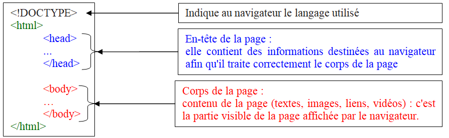
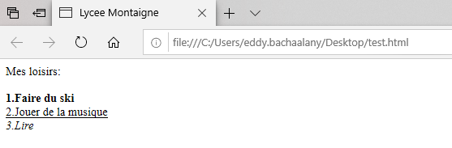

3. L'écriture d'une page Web
4.1.Le langage HTML
La programmation d’une page Web repose sur l’utilisation d’un langage de description appelé HTML pour (HyperText Markup Language).
Le langage HTML utilise des balises pour délimiter le début et la fin de chaque instruction lue par le navigateur.
Chaque instruction HTML est délimitée par une balise ouvrante < élément> et une balise fermante </élément>.
Ces balises sont invisibles à l’écran mais elles permettent au navigateur d’interpréte
Propriété
Toute page HTML d'un site Web se présente ainsi :

le code HTML est contenu entre les deux balises <html> et </html>.
Exemple:

Liste ordonnée et non ordonnée (cours)
<ol>
une liste ordonnée commence par la balise <ol>.
une liste ordonné débute par l'argument <li>
par défaut, la liste est marquée par des numéros (1, 2, 3)
exemple:
<ol>
<li>café</li>
<li> thé </li>
<li> lait</li>
<ol>
Résultat:
café
thé
lait
l'argument type de la balise <ol>, définit le type des éléments de la liste
type="1" la liste sera numéroté (par défaut)
type="A" la liste sera lettré par des majuscules
type="a" la liste sera lettré par des minuscules
type="I" la liste sera lettré par des lettres romain majuscules
type="i" la liste sera lettré par des lettres romain minuscule++
Exercice 1:
Voici ci-dessous un code HTML :
<!DOCTYPE html>
<html>
<head>
<meta charset="utf-8">
<title> Lycée Montaigne </title> <!--ligne 5-->
<link rel="stylesheet" href="style.css">
</head>
<body> <!--ligne 8-->
<h1> Notre site</h1> <!--ligne 9-->
<ol><!--ligne 10-->
<li> comsommation énergétique du web</li><!--ligne 11-->
<ul><!--ligne 12-->
<li> Les datacenters</li><!--ligne 13-->
<li> netflix</li><!--ligne 14-->
</ul><!--ligne 15-->
<li> comment réduire cette comsommation énergétique ?</li><!--ligne 16-->
</ol><!--ligne 17-->
</body><!--ligne 18-->
</html>
- Expliquer le rôle de chacune des lignes du code précédent possèdant un commentaire donnant le numéro de la ligne, c'est-à-dire la ligne 5 et celles dont le numéro est compris entre 8 et 18.
Exercice 2
Il existe de nombreuses plateformes pour vous entraîner et voir en direct le rendu de votre code.
Rendez-vous sur ce site qui va nous permettre de travailler le code html en travaillant de manière déportée.
Dans la partie HTML copiez/collez le contenu du body du code précédent. Puis cliquez sur Run.
🧠 Teste tes connaissances
Réponds aux questions puis clique sur « Vérifier » — la correction s'affiche aussitôt.
1. Que signifie le sigle HTML ?
2. À quoi servent les balises en HTML ?
3. Par quelle balise commence une liste ordonnée ?
4. Quel argument de la balise <ol> permet d'obtenir une liste numérotée par des majuscules (A, B, C) ?